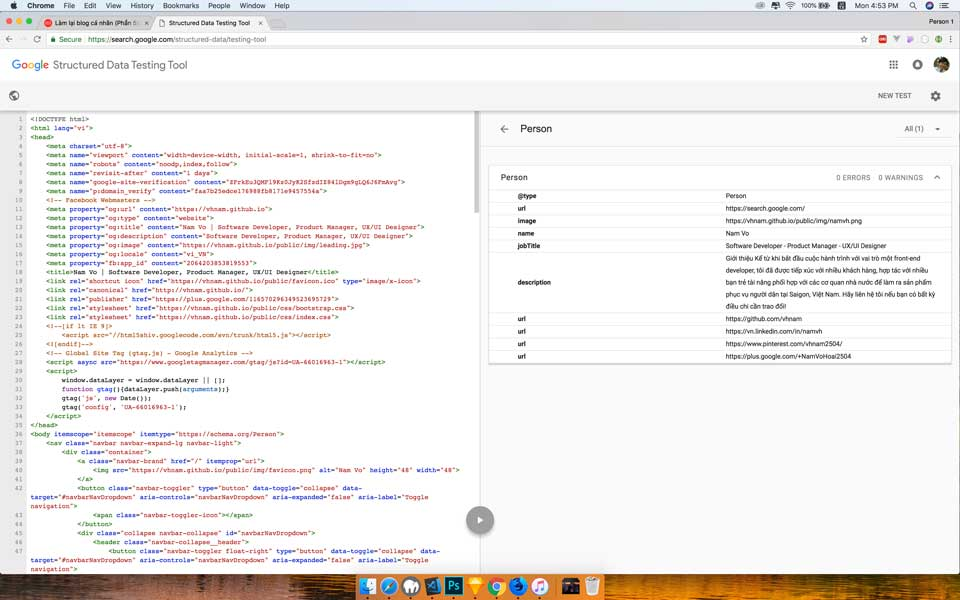
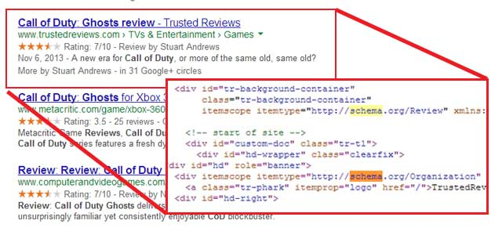

Phần này tớ sẽ gắn Schema.org để hỗ trợ cho bot của các công cụ tìm kiếm.

Schema.org là một trang đánh dấu cho dữ liệu có cấu trúc do Google, Microsoft, Yahoo và Yandex phát triển. Mục đích chính là tạo ra một trang đánh dấu dữ liệu có cấu trúc để tất cả các công cụ tìm kiếm đều có thể hiểu được.
Dưới đây là minh hoạ về dữ liệu cấu trúc của Schema.org. Ta có một đoạn code HTML để giới thiệu bộ phim.
<div>
<h1>Avatar</h1>
<span>Director: James Cameron (born August 16, 1954)</span>
<span>Science fiction</span>
<a href="../movies/avatar-theatrical-trailer.html">Trailer</a>
</div>
Sau khi thêm Schema.org sẽ trở thành như sau.
<div itemscope itemtype ="http://schema.org/Movie">
<h1 itemprop="name">Avatar</h1>
<div itemprop="director" itemscope itemtype="http://schema.org/Person">
Director: <span itemprop="name">James Cameron</span> (born <span itemprop="birthDate">August 16, 1954</span>)
</div>
<span itemprop="genre">Science fiction</span>
<a href="../movies/avatar-theatrical-trailer.html" itemprop="trailer">Trailer</a>
</div>
Schema.org cung cấp một kho từ vựng để mọi người tra cứu sử dụng theo từng chủ đề. Bạn có thể tham khảo kho từ vựng đó tại https://schema.org/docs/full.html.
Như đã nói, Schema.org là một cấu trúc để các công cụ tìm kiếm như Google, Bing có thể hiểu được. Tớ sẽ cho các bạn xem trang chủ sau khi áp dụng cấu trúc Schema.org vào. Tớ dùng Structured Data Testing Tool tại địa chỉ https://search.google.com/structured-data/testing-tool.
Tớ sẽ ví dụ với schema là Person. Đầu tiên, ta vào địa chỉ https://schema.org/Person. Mỗi một bộ từ vựng sẽ có 3 phần chính là.
actor, author, composer là thể hiện của Person.
Tớ sử dụng Schema.org dưới dạng microdata để dễ kiểm soát.
Sử dụng Schema.org kết hợp với một số semantic tag của HTML5 sẽ giúp các công cụ tìm kiếm hiểu được nội dung trang web của bạn. Nhằm tăng thứ hạng trên công cụ tìm kiếm. Đây là một cách SEO bằng code. Ngoài ra, còn một cách SEO nữa là sử dụng metadata sẽ được trình bày ở một bài viết khác.